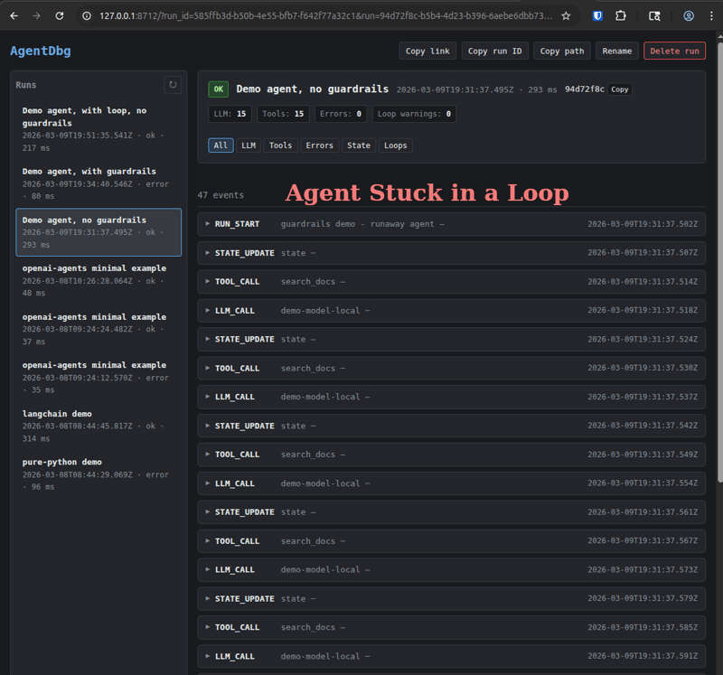

Protect budget
Abort loop-heavy runs before they expand API costs.

Guardrails are optional development-time safety rails that abort runs when behavior crosses your limits, then preserve a full evidence trail so root cause is obvious.
Abort loop-heavy runs before they expand API costs.
Guardrail-triggering events are still recorded for investigation.
Set thresholds in decorators, context managers, YAML, or env vars.
Start minimal, then tighten thresholds as your run profile becomes clear.
| Guardrail | Purpose | Typical starter value |
|---|---|---|
stop_on_loop |
Abort when repeated event patterns are detected | true for iterative debugging |
stop_on_loop_min_repetitions |
Minimum repetitions required to trigger loop abort | 3 |
max_llm_calls |
Cap model invocations per run | 25-100 |
max_tool_calls |
Cap tool invocations per run | 25-100 |
max_events |
Cap total timeline events | 100-300 |
max_duration_s |
Cap wall-clock run duration in seconds | 30-120 |
ERROR event captures guardrail reason and values.RUN_END(status=error) is written.You keep the full timeline to the exact abort point.

Use safe defaults first, then narrow thresholds to match expected behavior.